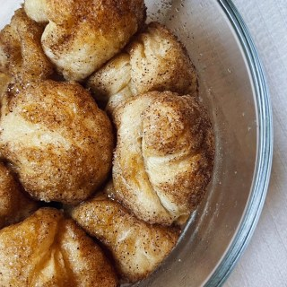

Little Monkey Bread

When I had a lot more time I used to make my own bread. Sometimes I turned it into monkey bread and we would have enough for a small army of children, which was perfect. These days I need a smaller scale recipe. Check out the Variations and Reccomendations for details on scaling and other notes.
Ingredients
- One can of crescent roll dough (8 pieces)
- 2 tsp granulated sugar
- 1/2 tsp cinnamon
- 1/4 tsp chunky salt
- 2 tsp brown sugar
- 2 tbsp butter (melted)
Steps
- Preheat oven to 350°F
- Reserve 2 crescent roll pieces.
- Grease an appropriately sized oven-safe container with butter
- In a small bowl combine granulated sugar, salt, and cinnamon.
- Cut the 6 pieces of crescent roll dough into 4 pieces each, and roll into balls
- Roll each piece of dough in the mixture and place in prepared baking dish.
- Stir brown sugar with butter and pour over the dough.
- Sprinkle any remainder of sugar and cinnamon over the dough.
- Bake for 20 minutes or until browned. Don't let it burn but make sure it's cooked through.
Variations and Recommendations
- I use a tiny little metal loaf pan and it's perfect for 6 crescent roll pieces.
- As written, this is a great shared dessert or can be for one if you are pretty hungry.
- Scale this up or down, it continues to work, but keep in mind that cooking times will vary greatly.
- Bake the two extra cresccent rolls and eat them as a snack while preparing the dessert.
- I tried adding chocolate by rolling a couple chocolate chips in each ball and substituting cocoa for cinnamon. It was pretty underbaked on the inside and nearly burned on the outside of each ball.
Acknowledgements